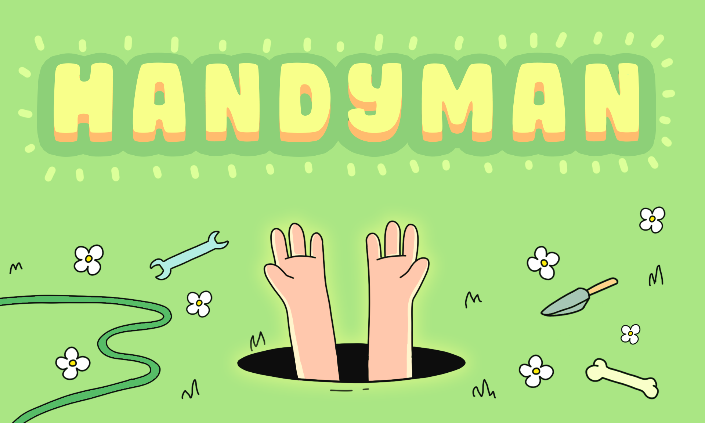
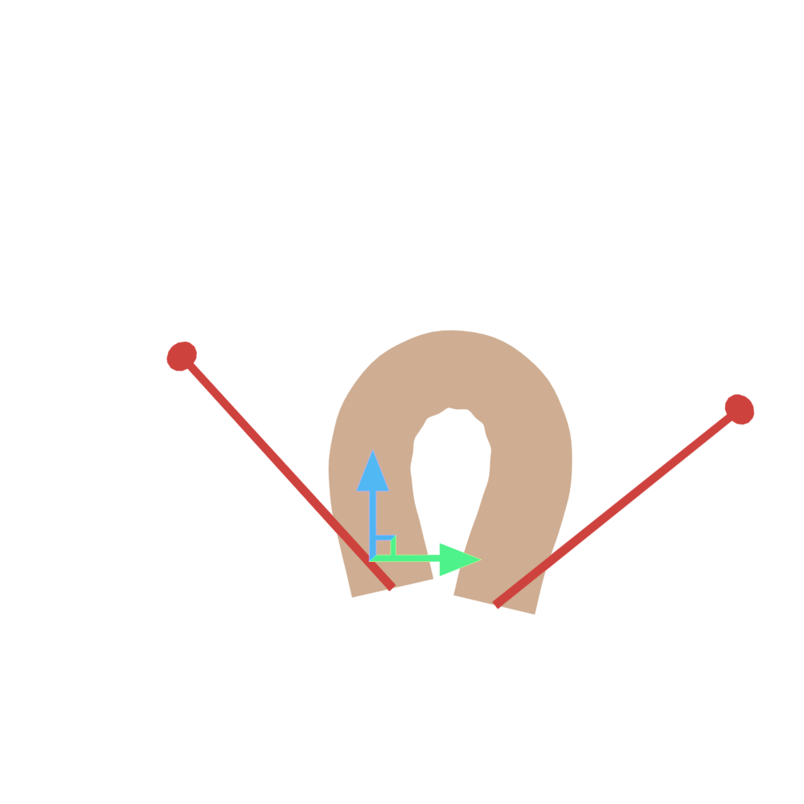

Take control of a wild set of hands protruding from a hole in the ground. Snatch purses, tie shoelaces, hide in sneaky places, make
shadow puppets and much more! Just remember to wipe off your fingerprints. Coming to Steam in 2021.


CurveIK is an IK plugin for Unreal Engine 4 written in C++. Check it out on Github!